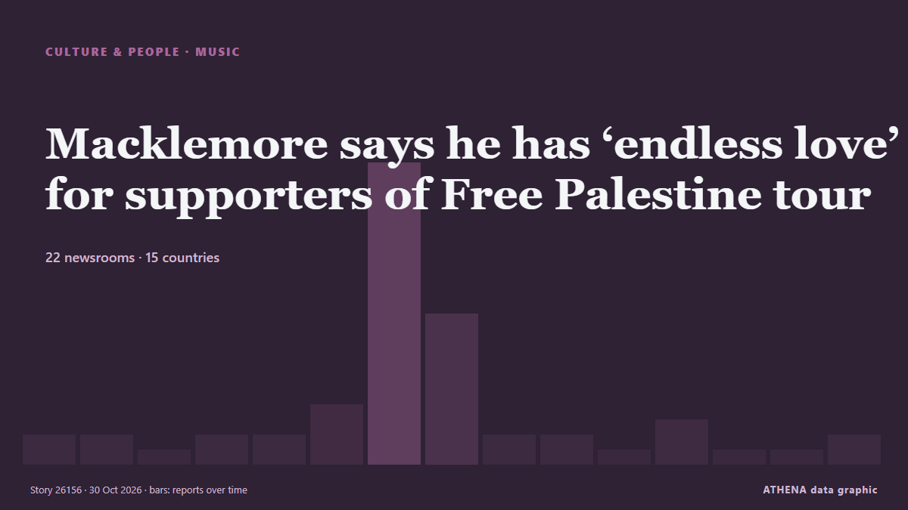

Macklemore says he has ‘endless love’ for supporters of Free Palestine tour

The rapper said he ‘couldn’t have imagined a better place to begin this tour’. from Evening Standard (London)
Reported independently by 22 outlets in 15 countries since 23 Oct, first by Al Jazeera English; coverage is fading. Sport and culture stories are filed, not risk-assessed. Confidence is 92% (high), with 22 independent outlets corroborating it and an average source reliability of 78%. Newsrooms by country: United Kingdom (9), Ireland (4), Qatar (3). Coverage: 23 Oct to 30 Oct, 168 hours.
What changed: 1 new report in the 24 hours to 30 Oct.
First reported as: US rapper Macklemore launches 'Free Palestine Tour'
At a glance
Selected, scored and written by ATHENA's published methodology. No editor intervenes in individual events. How this is produced ›
| 23 Oct 23:25 UTC | 1 |
|---|---|
| 24 Oct 11:25 UTC | 1 |
| 24 Oct 23:25 UTC | 0 |
| 25 Oct 11:25 UTC | 0 |
| 25 Oct 23:25 UTC | 1 |
| 26 Oct 11:25 UTC | 2 |
| 26 Oct 23:25 UTC | 19 |
| 27 Oct 11:25 UTC | 9 |
| 27 Oct 23:25 UTC | 1 |
| 28 Oct 11:25 UTC | 1 |
| 28 Oct 23:25 UTC | 0 |
| 29 Oct 11:25 UTC | 2 |
| 29 Oct 23:25 UTC | 0 |
| 30 Oct 11:25 UTC | 0 |
| 30 Oct 23:25 UTC | 1 |
Why these numbers
Importance
Risk
Confidence
The reporting — who reported it, and when
headline as published · opens the original- Al Jazeera English · QatarMacklemore: ‘I say free Palestine’ as he kicks off a new tour
- Tehran Times · IranMacklemore says ‘being human is not complicated’ as sold-out Gaza benefit tour opens
- Gulf News · United Arab EmiratesMacklemore calls for 'free Palestine' at first show since Ed Sheeran tour exit
- RTÉ News · IrelandHozier and Kneecap join Macklemore for Free Palestine gig
- Free Malaysia Today · MalaysiaMacklemore launches ‘Free Palestine Tour’ after Ed Sheeran fallout
- The New Arab · INTUS rapper Macklemore launches 'Free Palestine Tour'
- CNA (Channel NewsAsia) · SingaporeUS rapper Macklemore launches 'Free Palestine Tour' after Ed Sheeran fallout
- NBC News (World) · United StatesMacklemore kicks off sold out ‘Free Palestine’ tour in Dublin
- Arab News · Saudi ArabiaUS rapper Macklemore launches ‘Free Palestine Tour’ after Ed Sheeran fallout
- TheJournal.ie · Ireland‘It’s been a crazy six weeks’: Hozier and Kneecap join Macklemore for 'Free Palestine' Dublin gig
- The Straits Times · SingaporeMacklemore vows to fight until 'last breath' at opening of 'Free Palestine' tour
- Al-Monitor · United StatesMacklemore vows to fight until 'last breath' at opening of 'Free Palestine' tour
- The Jerusalem Post · IsraelMacklemore vows to fight until 'last breath' at opening of 'Free Palestine' tour
- Al Jazeera English · QatarMacklemore opens ‘Free Palestine’ tour in Dublin
- Gulf News · United Arab EmiratesMacklemore Free Palestine concert: Mark Ruffalo, Cynthia Nixon and more join Dublin kick-off
- Express Tribune · PakistanMacklemore vows to fight until 'last breath' at opening of 'Free Palestine' tour
- IOL · South AfricaUS rapper Macklemore launches ‘Free Palestine’ tour after being dropped from Ed Sheeran shows
- Middle East Eye · INTMacklemore kicks off 'Free Palestine' tour, calls for 'shared humanity'
- Asharq Al-Awsat (English) · Saudi ArabiaMacklemore Vows to Fight Until ‘Last Breath’ at Opening of ‘Free Palestine’ Tour
- Evening Standard (London) · United KingdomMacklemore defends 'Free Palestine' comments as he kicks off Gaza solidarity tour after Ed Sheeran row
- Arab News · Saudi ArabiaDeafening cheers in Dublin as Macklemore kicks off ‘Free Palestine’ tour
- Belfast Telegraph · United KingdomMacklemore delivers speech about power of music at first Free Palestine gig
- Evening Standard (London) · United KingdomMacklemore delivers speech about power of music at first Free Palestine gig
- Anadolu Agency (English) · TurkeyHozier, Kneecap join Macklemore at sold-out launch of Free Palestine tour
- Middle East Eye · INTBritish politicians defend Macklemore and reject push to ban him from UK
- France 24 English · FranceAmerican rapper Macklemore begins 'Free Palestine' tour
- Belfast Telegraph · United KingdomMacklemore on Free Palestine Tour: ‘I called a lot of people... you know who picked up that phone right away? Kneecap and Hozier’
- Evening Standard (London) · United KingdomJack Antonoff says Ed Sheeran should have 'cancelled' tour rather than drop Macklemore
- TheJournal.ie · IrelandMacklemore’s Dublin gig puts international spotlight on Ireland
- The New Arab · INTMark Ruffalo sends 'free Palestine' message to Macklemore show
- Belfast Telegraph · United KingdomMacklemore: Free Palestine show was ‘one of most beautiful moments’ of my life
- Evening Standard (London) · United KingdomMacklemore: Free Palestine show was ‘one of most beautiful moments’ of my life
- TheJournal.ie · IrelandMacklemore says Dublin Free Palestine gig was ‘one of the most beautiful moments’ of his life
- Ada Derana · Sri LankaMacklemore begins Free Palestine tour after Ed Sheeran fallout
- Evening Standard (London) · United KingdomMacklemore says he has ‘endless love’ for supporters of Free Palestine tour
- Belfast Telegraph · United KingdomMacklemore says he has ‘endless love’ for supporters of Free Palestine tour
- Al Jazeera English · QatarFans voice support on final night of Macklemore’s ‘Free Palestine’ tour